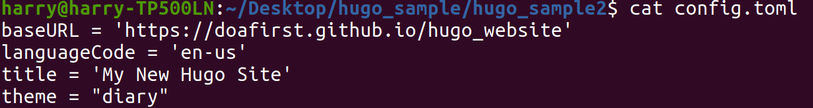

Git path from git hub
git clone https://github.com/doafirst/hugo.git
./sub_update.sh
1. Hugo install on ubuntu
sudo snap install hugo --channel=extended
2. New Site Hugo
hugo new site hugo_sample
cd hugo_sample
3. Add theme
cd hugo_sample/
git init
git submodule add https://github.com/mivinci/hugo-theme-minima.git themes/minima
cp themes/minima/exampleSite/config.toml .
#or
echo 'theme = "minima"' >> config.toml
Submodule Commands
#First time add theme method
git submodule add https://github.com/AmazingRise/hugo-theme-diary.git themes/diary
#If .gitmodules theme has already exist. but folder is empty
git submodule init
git submodule update
#or single update
git submodule update --remote themes/diary
4. New Post
hugo new posts/hello.md
cat content/posts/hello.md
5. Server start
hugo server -D

6. Generate Github Page Content
Set correct baseURL address in config.toml file My github page path is https://doafirst.github.io/hugo_website

Hugo build
hugo -d ../hugo_website -D
# -D, --buildDrafts include content marked as draft
# -d, --destination string filesystem path to write files to
cd ../hugo_website
ls
#Check index.html existed
7. Create new repository

Git Path : https://github.com/doafirst/hugo_website.git
8. Push hugo_website folder to github
cd hugo_website
git init
git add .
git commit
git add remote origin https://github.com/doafirst/hugo_website.git
git push origin master
９. Github Page Enable
hugo_website Repository → Settings → Page →Select Branch & Save


Lesson Learn 1 :
###Git clone repository “themes” folder empty
After git clone and hugo build , and some error message showed.

Build fail reason is themes folder empty , there is nothing in diary folder

I use git submodule to clone themes , therefore the themes submodules will not upload to git repository.